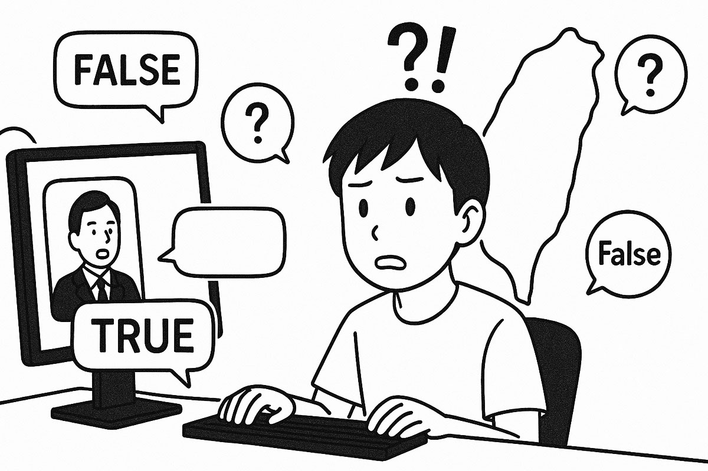
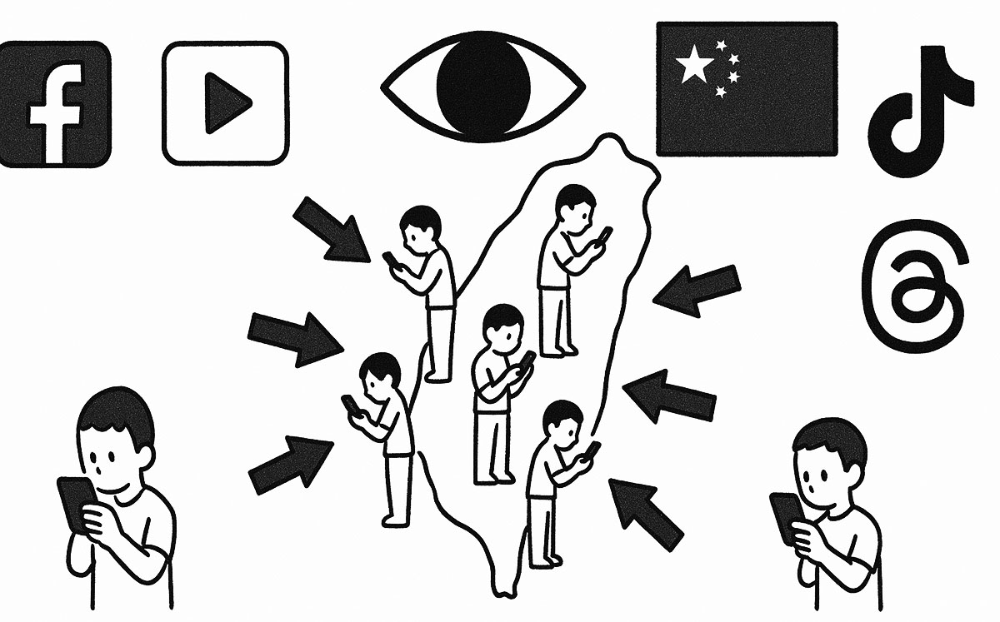
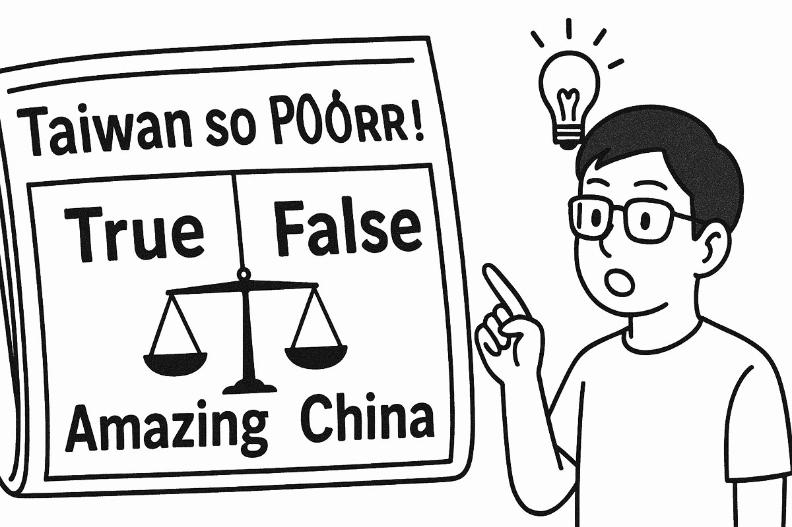
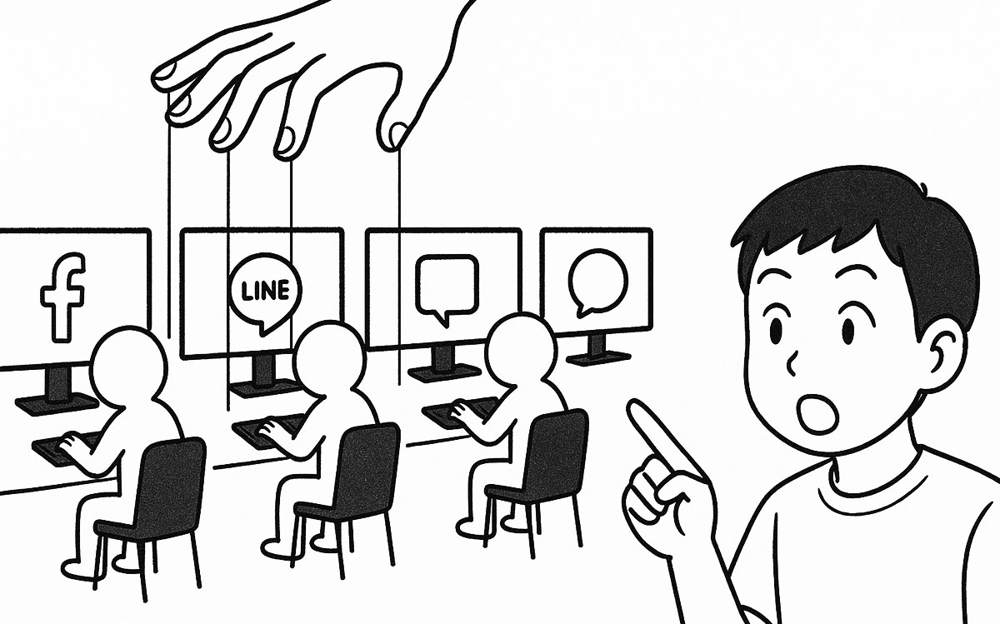
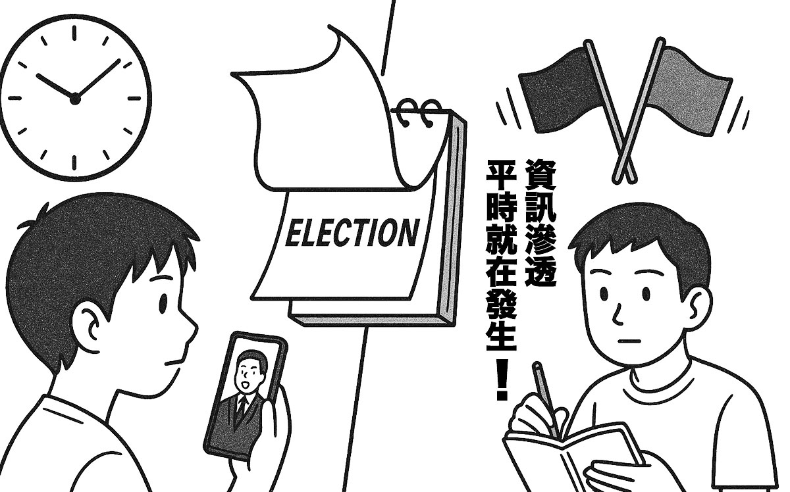
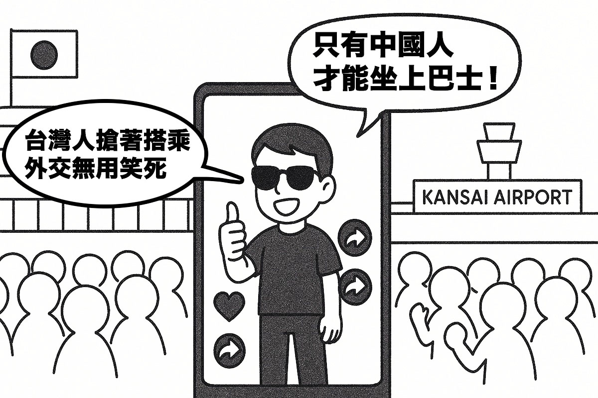
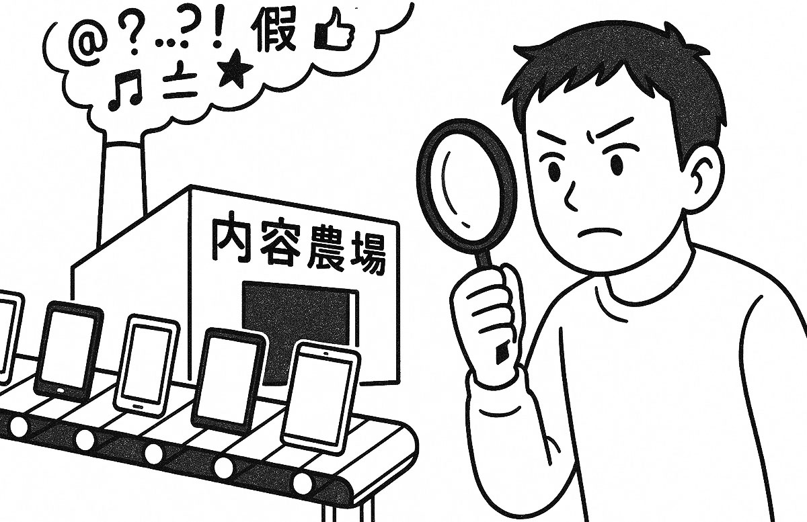
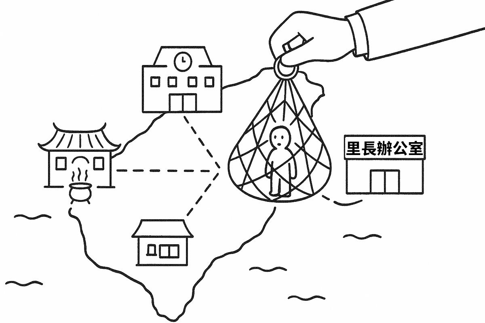
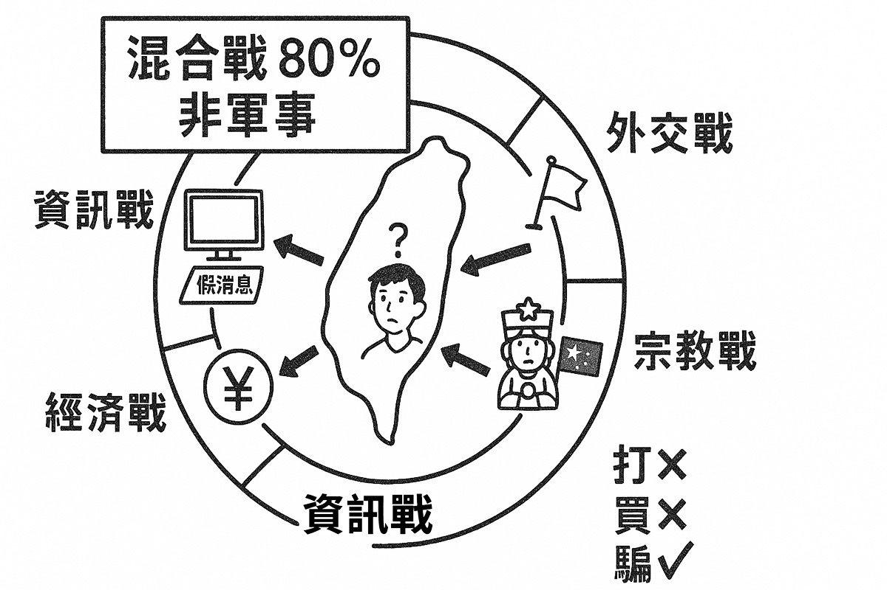
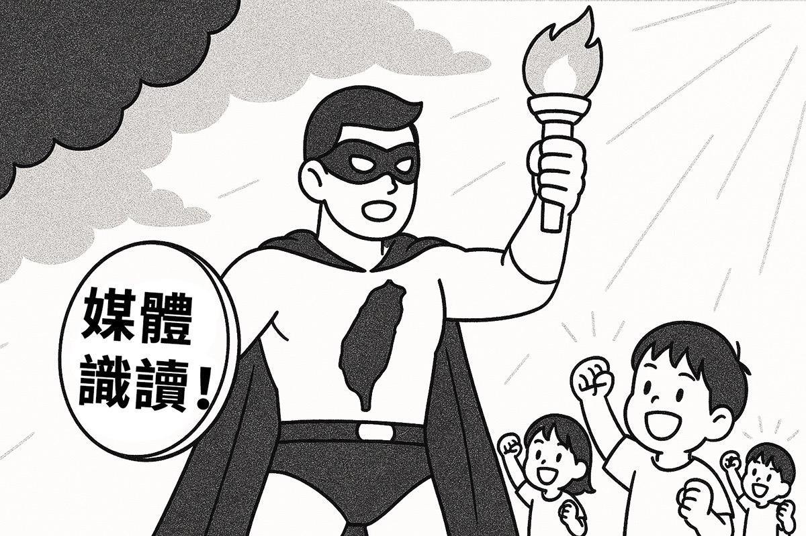

【資訊戰然後呢】by 沈伯洋
作者簡介：台北大學犯罪學研究所副教授、立法委員、黑熊學院院長，台灣資訊戰與認知作戰研究權威，專精於中國對台資訊操作分析。
系列特色：深度解析中國對台資訊戰手法，從學術角度剖析認知作戰的運作機制與防禦策略。
📋 影片系列大綱
EP1 - 資訊戰是什麼？

- 資訊戰定義：旨在影響人們的認知並製造社會混亂，主要是一種針對心靈的心理攻擊 [00:32]
- 主要目標：製造不和諧，使社會更加混亂，便於攻擊者實現外交孤立或貿易戰等目標 [01:13]
- 俄羅斯策略：找出目標國家內部的分裂議題，透過社群媒體放大分歧，使人們更加兩極化 [01:28]
- 2016美國大選案例：俄羅斯約2011年開始對美國發動資訊戰，建立76個假帳戶，先贏得非裔社群信任，再散布不實資訊勸阻投票，導致非裔選民投票率創20年新低 [05:09]
EP2 - 台灣現在有受到資訊戰的攻擊嗎？

- 中國學習俄羅斯：中國曾派員赴俄學習資訊戰戰術，但因語言不熟悉初期不太成功 [00:29]
- 台灣成為試驗場：由於語言相似性，台灣成為中國資訊戰策略的關鍵「試驗場」 [01:32]
- 攻擊升級：自2008年來中國對台資訊戰顯著升級，2015年網路部隊重組整合到解放軍戰略支援部隊 [04:38]
- 目標內部撕裂：製造藍綠對立，以關西機場事件為例，從內部削弱台灣社會 [07:51]
EP3 - 資訊戰是假新聞嗎？

- 不只是假新聞：假新聞在資訊攻擊中佔不到20%，主要是製造認知偏誤和錯覺 [00:05]
- 標題操縱：以黨產會調查華興育幼院為例，同樣新聞用不同標題激怒不同政治立場的民眾 [01:16]
- 80%偏見新聞：早期資訊戰多使用帶有偏見的新聞來吸引特定目標群體 [03:28]
- 放大衝突：資訊戰的目標是加劇現有的社會衝突，而非創造新衝突 [08:09]
EP4 - 網軍是真的嗎？

- 小團隊大影響：不到30人的團隊就能執行完整的資訊攻擊 [00:20]
- 五毛黨現象：包括兼職人員和出於愛國心的「自稱五毛黨」 [00:49]
- 操縱輿論：網路攻擊主要目的是操縱輿論或製造流量 [01:04]
- 真正威脅：來自中央機關策劃的攻擊，以及內容農場、LINE群組的滲透 [08:18]
EP5 - 是不是選舉到了才在講資訊戰？

- 新興領域：認知攻擊是相對較新的研究領域，大部分研究都在過去兩年內出現 [00:16]
- 分裂策略：解放軍政治工作部目標是製造藍綠對立，現已擴展到各種形式的社會對立 [01:05]
- 攻擊所有候選人：中國案例要求攻擊「所有」初選候選人，目的是製造混亂和分裂 [02:15]
- 國安議題：資訊戰是國家安全問題，需要跨黨派合作應對外部攻擊 [03:44]
EP6 - 網紅模式：資訊戰的第一招！

- 策略轉變：「買下台灣不如騙倒台灣」，透過資訊攻擊製造內部分裂比直接佔領更具成本效益 [01:42]
- 關西機場事件：認知領域攻擊的典型案例，透過假新聞引發巨大爭議 [02:06]
- 攻擊流程：中國電視台人員在微博發布假訊息→內容農場包裝成新聞→台灣媒體轉載 [04:10]
- 網紅模式SOP：約30人小團隊執行完整資訊攻擊，從網紅發文到媒體報導的系統化操作 [09:08]
EP7 - 社群攻擊和內容農場：資訊戰的第二招！

- 網紅模式局限：難以定期執行，需要重大事件配合 [00:21]
- 內容農場運作：中國公司經營，提供付費修改新聞標題服務，製造帶有偏見的新聞 [01:25]
- 演算法操縱：透過社群媒體演算法，根據用戶偏好投放量身定制的偏見資訊 [03:56]
- 策略演進：從早期簡體中文易被識破，進化到付費台灣行銷公司傳播，甚至從英文新聞翻譯成繁體中文 [09:05]
EP8 - 里長、宮廟、黑道、台商、學校：資訊戰的第三招！

- 地面滲透模式：被認為是最有效的方法，利用現有社區團體的內部凝聚力和信任 [02:07:00]
- 滲透目標：里長、小型宮廟、幫派、學校教師、宗親會、同鄉會、台商團體 [02:07:00]
- 運作方式：透過中國資金、免費旅遊、高規格款待等方式滲透這些團體
- 模式結合：地面滲透可與網路攻擊結合，相互加強影響效果 [08:09:00]
EP9 - 「打台灣不如騙台灣」中國對台灣併吞的混合戰手段

- 混合戰的定義與組成：混合戰是一個上位概念，包含多種戰術，其目標是為了併吞一個國家。根據俄羅斯的說法，混合戰中非軍事手段佔80%，軍事手段佔20% [00:05]
- 資訊戰的重要性：資訊戰在軍事和非軍事衝突中都扮演關鍵角色，主要目的是製造國家內部的混亂與分裂 [01:39]
- 外交戰與資訊戰的結合：中國在斷交前會先進行資訊戰攻擊，散佈台灣在邦交國上花費過多的訊息，製造內部對立 [02:18]
- 宗教戰與資訊戰的結合：中國扶植特定宗教勢力，宣稱媽祖是中國的，透過地面滲透模式影響台灣信眾，最終操縱選舉 [03:22]
- 混合戰的最終目標：從「打台灣不如買台灣」轉變為「買台灣不如騙台灣」，透過各種手段使台灣孤立無援，更容易被併吞 [08:43]
EP10 - 台灣如何對抗中國資訊戰？

- 攻擊本質：中國攻擊是透過欺騙和偏見資訊影響認知，類似廣告運作方式 [00:24]
- 媒體素養限制：僅提高媒體素養不足，人們傾向於相信想相信的內容 [00:42]
- 透明法案：建議類似《外國代理人登記法》，要求為外國勢力服務者進行登記披露 [06:15]
- 民主防禦：最好的防禦是持續強化民主，解決經濟轉型和外交政策等廣泛社會問題 [10:20]
【區域情勢分析 & 認清中共】by 明居正
作者簡介：台灣大學政治學系兼任教授，長期專精於中國政治、兩岸關係及國際關係研究，對中共政治運作有深度分析。
系列特色：從政治學角度深入分析中共的政治體制、對台策略及區域情勢發展，幫助民眾認清中共本質與國際局勢變化。
📋 影片系列大綱
區域情勢分析系列
EP1 - 中共對台統戰的真實目的
- 中共對台策略的本質：試圖將中華民國的所有成就抹黑為「台獨」，並以此為藉口進行打壓 [00:37]
- 兩岸對抗本質：並非統獨之爭，而是共產主義與三民主義的路線之爭，台灣發展成果證明三民主義的優越性 [00:37]
- 「反台獨」大戰略：中共利用虛假民族主義煽動仇恨，對內動員、對台分化、對國際施壓 [06:34]
- 真正問題是共產主義：中共將「反台獨」作為戰略武器，轉移焦點讓人忘記共產主義才是真正威脅 [11:57]
EP2 - 區域情勢變化與挑戰
- 台海安全重要性：台海局勢已成為全球安全重心，確保台海穩定成為國際共識 [00:00]
- 北韓出兵俄烏戰爭：北韓希望破壞國際秩序獲取利益，從俄羅斯獲取高科技和經濟援助 [01:49]
- 中東局勢變化：以色列與哈馬斯、真主黨衝突，與伊朗交火持續 [01:49]
- 中共對台騷擾：五次圍台軍演，海空騷擾有增無減，加強對台動武準備 [10:45]
EP3 - 中共心虛的表現：內外困境
- 戰略包圍圈形成：美日韓聯盟強化、AUKUS 出現、四方安全對話加強，中共感覺走入敵意包圍圈 [02:47]
- 內部經濟困境：貪污嚴重、經濟虛胖、缺乏關鍵技術，每年需花費 4000 多億美元購買 3C 產品 [02:47]
- 國際反共趨勢：各國進行「去風險化」，引發貿易戰、金融戰、科技戰 [10:19]
- 台灣戰略選擇：應參與反共行列，強化政治、經濟、軍事、心理準備，成為反共燈塔 [10:19]
EP4 - 美中關係的演變與現況
- 台灣戰略重要性：位於第一島鏈關鍵地位，全球 50% 貨輪經過台海，18 條國際航線必經之道 [00:00]
- 美中關係惡化：從 2017-2018 年後關係日益激烈，發展到制裁、脫鉤（去風險化） [02:04]
- 美國三大策略：合作、競爭、對抗並存的對中政策 [04:03]
- 冷戰 2.0：美中雙方想打倒對方但不使用軍隊，透過和平競爭方式對抗 [14:15]
EP5 - 台灣的戰略重要性
- 地理位置關鍵：位於第一島鏈中央，控制海上通道和戰略水域的關鍵作用 [00:00]
- 島鏈理論：第一島鏈是圍堵威權國家向外擴張的第一道防線，台灣位於島鏈中央 [02:55]
- 半導體絕對優勢：美國 90% 至 92% 最高階晶片來自台灣，比石油更重要 [06:42]
- 台海全球重要性：每天 48% 全球貨櫃輪經過台海，連接東海與南海的戰略要道 [11:28]
EP6 - 中國大陸軍方內部情況
- 高層醜聞頻傳：單人晉升上將儀式不尋常，多位上將缺席重要會議 [01:13]
- 大規模軍方整肅：前國防部長李尚福、政治工作部主任苗華等高層倒台 [05:21]
- 火箭軍三任司令倒台：李玉超、魏鳳和、周亞寧先後落馬，戰略支援部隊被拆分 [05:21]
- 對戰力的影響：高層腐敗和派系鬥爭嚴重影響士氣和作戰能力 [15:33]
EP7 - 中共對美宣傳基調轉變
- 宣傳基調突然轉變：《人民日報》和《環球時報》舉辦「中美友好合作故事」徵文活動 [00:00]
- 改變原因：擔心川普上台再次發動貿易戰，希望透過甜言蜜語緩和美國情緒 [03:48]
- 五大霸權批評：中共從政治、軍事、經濟、科技、文化五方面批判美國 [05:06]
- 仇恨動員統治：中共透過假民族主義製造仇恨，掩蓋共產主義問題 [11:56]
EP8 - 2024 年中共軍方高層貪腐情況
- 20 名高階將領確認倒台：上將 10 名，中將 9 名，少將 1 名，涵蓋各軍種 [00:51]
- 習近平親信落馬：國防部長李尚福與外交部長秦剛同時下台，顯示高層不穩 [03:34]
- 12 人失蹤未正式離職：包括東部戰區司令林向陽、火箭軍司令王厚斌等 [09:12]
- 軍隊問題嚴重：19 人因貪腐落馬，普遍貪腐嚴重影響戰鬥力 [14:33]
EP9 - 兩岸關係的爭議與誤解
- 經貿關係變化：中共單方面取消 ECFA 部分關稅減讓，台灣轉向美國和東南亞市場 [01:12]
- 軍事演習升級：「聯合利劍 2024A」和「2024B」演習，海警船首次完整繞行台灣 [07:26]
- 政治外交打壓：諾魯斷交、金門快艇事件、發布「懲治台獨 22 條」 [09:56]
- 責任歸屬：兩岸關係惡化基本上是中國大陸破壞的，只要中共不放棄一黨專政就難恢復 [15:28]
EP10 - 台灣的戰略重要性與優勢
- 全球經貿夥伴：台灣是世界主要大國的經貿夥伴，經貿總量排名前 20 名 [00:44]
- 戰略地位核心：第一島鏈中心、重要航運樞紐、遏制中共海軍發展 [02:06]
- 半導體關鍵地位：台積電佔全球晶圓製造 55%，先進製程達 90% 至 92% [09:52]
- 美國戰略考量：失去台灣將導致亞洲各國被迫導向中共，美國國際地位崩塌 [09:52]
EP11 - 台積電赴美投資的戰略意義
- 投資時機極佳：川普需要成功案例挽回顏面，台積電投資讓川普既拿面子又拿裡子 [01:48]
- 避免川普關稅：幫助台灣擋下關稅第一刀，為未來談判爭取時間和空間 [09:45]
- 投資非掏空：美國廠產量僅佔總產能 10%，美國 80-90% 需求仍需從台灣獲得 [10:12]
- 警惕認知戰：負面言論多來自中共宣傳，旨在削弱台美關係和抗敵意志 [14:53]
認清中共系列
EP1 - 漢光演習的意義與國際局勢
- 漢光演習三階段：2 月圖上兵推、4 月電腦輔助指揮所演習、7 月實兵演練 [00:09]
- 川普國際政策：結束烏克蘭戰爭，將負擔轉交歐洲，專注對付中國 [00:50]
- 中共攻台準備：大力擴軍備戰，建造大型登陸艦，頻繁戰備警巡 [02:09]
- 國際支持台灣：美國推出臨時國防戰略，阻止中共佔領台灣列為優先項目 [05:04]
EP2 - 關稅戰的視角與美國戰略
- 關稅戰現況：美國商品進入中國需繳 125% 關稅，中國商品進入美國需繳 145% 關稅 [01:24]
- 表面理由：貿易逆差嚴重、促進美國產品出口、製造業回流、貿易不公平行為 [03:26]
- 大戰略意圖：削弱中共經濟實力，打擊洗產地行為，迫使中共談判 [09:00]
- 台灣角色：台積電半導體關鍵地位，台美戰略同盟關係重要 [15:35]
EP3 - 中華民國的抗戰歷史與國安威脅
- 歷史教訓：88 年前蔣委員長預見日本野心堅定抗戰，強調結合自身與國際情勢重要性 [00:10]
- 中共威脅升級：自建黨以來企圖消滅中華民國，經濟實力增強後高速擴建軍備 [01:48]
- 國際社會警覺：中共錯誤行為導致全球警惕，台灣獲國際重視與支持 [04:07]
- 中華民國優勢：經濟發達、民主政治成熟、科技進步，並非孤立無援 [14:16]
EP4 - 范斯副總統訪印與全球戰略
- 美印戰略合作：范斯訪印強調美印經濟合作能重塑世界貿易平衡 [00:17]
- 馬斯克佈局印度：特斯拉與美光等公司合作，推動半導體供應鏈多元化 [05:56]
- 產業鏈轉移：全球反共浪潮促使產業鏈從中國轉移至印度等國 [10:12]
- 台灣應對策略：應認清全球反共趨勢，配合國際局勢選好定位 [16:26]
EP5 - 中共篡改二戰歷史真相
- 習近平出席俄國閱兵：聲稱中俄曾並肩作戰，實為篡改歷史掩蓋不光彩過去 [00:09]
- 真實歷史：與蘇聯並肩作戰的是中華民國國軍，而非中共 [01:35]
- 中共真實作為：奉行「七分發展，兩分應付，一分抗戰」政策，利用抗戰擴張勢力 [03:50]
- 篡改歷史目的：爭奪抗戰話語權，對內洗腦，分化台灣，消滅中華民國歷史地位 [13:12]
EP6 - 歷史教訓與敵友關係
- 歷史重要性：應從抗日戰爭歷史汲取教訓，結合國際形勢判斷國家利益 [02:01]
- 美中關係演變：1972 年美國為抗衡蘇聯與中共建立關係，蘇聯解體後中共開始對抗美國 [03:10]
- 中共擴張野心：利用台商投資發展製造業，累積財富進行軍備擴張 [07:37]
- 認清敵友：中共始終是國軍主要敵人，應警惕其疑美論和疑日論 [10:50]
Jindřich Karásek - 認知戰專家
專家背景：捷克布拉格查理大學博士生，Trend Micro資深網路威脅研究員，認知戰、網路戰和反情報專家
重要演講："The Web of Cognitive Warfare" - WebExpo 2024，32分鐘會議演講，深入探討認知戰的複雜面貌及其在數字領域的表現。
觀看演講
NATO 盟軍改革司令部
機構背景：NATO專門負責軍事改革和未來戰爭發展的司令部
重要內容："Cognitive Warfare: Strengthening and Defending the Mind" 系列內容，2024年NATO傳播者會議討論對手如何透過認知攻擊影響NATO和國家受眾。
瀏覽資源
NATO 科學技術組織資源
機構背景：NATO附屬機構，專門滿足NATO聯盟及夥伴國家的科學技術需求
重要出版物："Cognitive Warfare, a Battle for the Brain"、"Mitigating and Responding to Cognitive Warfare"等權威研究報告。
瀏覽資源
RAND 公司專家
機構背景：美國著名智庫，專門研究國防和國家安全議題
重要演講者：Rand Waltzman（認知安全專家）、Nathan Beauchamp-Mustafaga 和 William Marcellino（生成式AI在資訊戰中的角色）
瀏覽研究